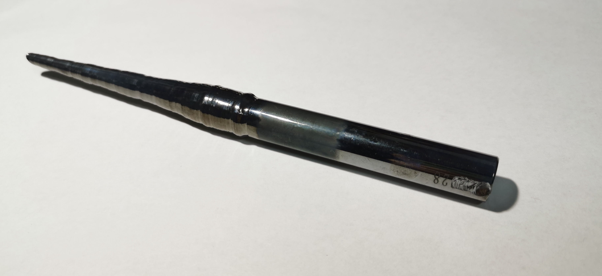
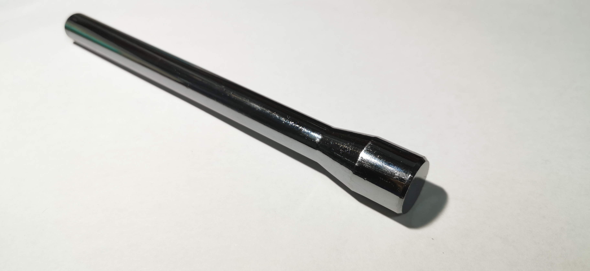

硅
2019.8 单晶硅棒 99.9999% 来自张Sir
2019 籽晶硅棒 99.9999% 来自张Sir
硅：地壳中的元素丰度顺序：氧硅铝铁钙，钠钾镁氢钛。可见，硅在地壳中丰度相当高，硅酸盐矿石早在远古时代就被人们所利用，如今硅化学牵扯各各领域，是富有实际价值的重要科学分支。硅属立方晶系金刚石晶型，颜色灰黑有金属光泽，质地坚硬而有脆性（我曾经尝试摔碎高纯硅，只摔成了约有一立方厘米的小块，继续摔则只能每次磨损一点）。据《无机化学丛书》的实验数据，在298K下，高纯硅电阻率为40Ω·cm，而且硅同时兼有本征半导体（硅单质作为半导体）与非本征半导体性质（硅材料中掺入其他元素形成半导体），在半导体工业的广泛利用使得硅提纯工艺很成熟，元素收藏圈的硅收藏普遍纯度也普遍都很高。